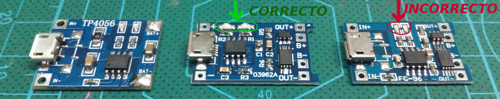

Garabullo v1
Herramientas
- Multímetro , voltímetro o polímetro
- Cargador de móvil
- Destornilladores plano/estrella punta fina
- Utensilio para pelar/cortar cables
- Soldadora
- Cinta aislante
Modelos 3D para imprimir
Chasis
Tapas
Ruedas
Otros
Cables
| Ud. | Descripción | |
|---|---|---|
| 20cm | Cable negro | |
| 15cm | Cable rojo |
Componentes
| Ud. | Descripción | Link |
|---|---|---|
| 1 | Placa PCB | pcbway |
| 2 | Bola loca 10mm de diámetro | aliexpress |
| 19 | Tornillos din7981 de 2.9 x 13mm | aliexpress |
| 2 | Motor 28byj-48 con reductora 1⁄16 1 | aliexpress |
| 1 | Pantalla 1.44’ SPI 128*128 v1.1 (8 pines | aliexpress |
| 2 | Conectores motor XH2.54 - con 5 pines macho | aliexpress |
| 1 | Driver motor ULN2803AG | aliexpress |
| 2 | Tira 15 pines macho 2.54mm 2 | aliexpress |
| 1 | Buzzer pasivo | aliexpress |
| 10 | Pulsadores smd 6-6-4.3 | aliexpress |
| 10 | LED WS2812b 3 | aliexpress |
| 3 | Resistencia 0805 10K | aliexpress |
| 11 | Resistencia 0805 1K | aliexpress |
| 10 | Condensador 100nf (0.1uf) | aliexpress |
| 1 | Interruptor - slide switch spdt aprox. 19x6x13mm | aliexpress |
| 1 | Cargador baterias de litio tp4056 4 | aliexpress |
| 1 | Step-up MT3608 | aliexpress |
| 1 | Bateria de litio 18650 | aliexpress |
- Estos motores no son los mismos que se usan en Escornabot, los de Escornabot son 28byj-48 con reductora de 1⁄64- El objetivo es ganar velocidad a cuenta de perder precisión. [return]
- Se pueden comprar tiras de con mayor numero de pines y luego se cortan en funcion de los que se necesiten [return]
- Se suele comprar una tira por ejemplo de 30 leds y luego se extraen [return]
- Al buscar el modelo tp4056 suelen aparecer los tres modelos de la imagen inferior. El de la izquierda lo debemos descartar porque no tiene protecciones, los dos siguientes son el mismo aunque tienen los componentes distribuidos de diferente manera. El chasis de garabullo está diseñado para utilizar el modelo del medio ya que cuenta con una abertura que permite ver los leds.  [return]
 Last Modified Jan 12, 2019
Last Modified Jan 12, 2019
 Edit this page
Edit this page